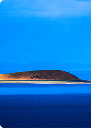

地区:
日喀则地区
Action
Another action
Something else here
Separated link
景点:
雅鲁藏布江大峡谷
Action
Another action
Something else here
Separated link
热门景点:
纳木错
布达拉宫
大昭寺
最多想去
最多去过
最多查看
最多评论

布达拉宫
想去
1245224
去过
245236
布达拉宫位于中国西藏自治区首府拉萨市区西北的玛布日山上，是一座宫堡式建筑群，最初是吐蕃王朝赞普松赞干布为迎娶尺尊布达拉宫的主...
first
prev
1
2
3
4
5
6
7
next
end